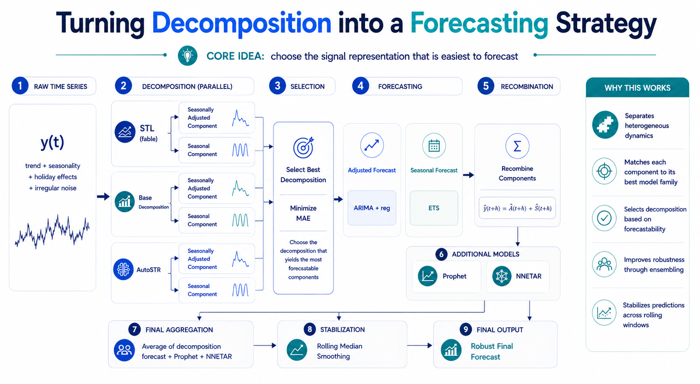

Overview
This project presents a decomposition-first forecasting framework for weekly time series. Instead of forecasting the raw signal directly, the pipeline generates multiple decompositions, selects the one producing the most forecastable components, models each component with a specialized method, and recombines the forecasts into a robust final prediction.
Architecture

📋 View detailed text-based architecture diagram
┌─────────────────┐
│ Raw Time Series │
│ y(t) │
└────────┬─────────┘
│
┌──────────────────┼──────────────────┐
▼ ▼ ▼
┌─────────────────┐ ┌─────────────────┐ ┌─────────────────┐
│ STL (fable) │ │ STL+Decompose │ │ AutoSTR │
│ window=53 │ │ (stats) │ │ (regularized) │
└───────┬─────────┘ └───────┬─────────┘ └───────┬─────────┘
│ │ │
▼ ▼ ▼
┌─────────────┐ ┌─────────────┐ ┌─────────────┐
│ Adjusted(t) │ │ Adjusted(t) │ │ Adjusted(t) │
│ Seasonal(t) │ │ Seasonal(t) │ │ Seasonal(t) │
└──────┬──────┘ └──────┬──────┘ └──────┬──────┘
│ │ │
└───────────────────┼────────────────────┘
│
▼
┌─────────────────────────┐
│ SELECT BEST by MAE │
│ (adj_residual + │
│ seasonal_residual) │
└────────────┬────────────┘
│
┌────────────────┼────────────────┐
▼ ▼
┌──────────────────┐ ┌──────────────────┐
│ Forecast Adjusted│ │ Forecast Seasonal│
│ ARIMA(0,1,2) │ │ ETS(A,A,N) │
│ ARIMA(0,2,2) │ │ trend_window=30 │
│ [50/50 mixture] │ │ [weight=1.0] │
└────────┬─────────┘ └────────┬─────────┘
│ │
└──────────────┬───────────────────┘
│
▼
┌──────────────────────────┐
│ Â(t+h) + Ŝ(t+h) │
└────────────┬─────────────┘
│
┌────────────────┼────────────────┐
▼ ▼ ▼
┌──────────────┐ ┌─────────────┐ ┌──────────────┐
│ Decomp │ │ Prophet │ │ NNETAR │
│ Ensemble │ │ (on maxes) │ │ (with xreg) │
└──────┬───────┘ └──────┬──────┘ └──────┬───────┘
│ │ │
└─────────────────┼────────────────┘
│
▼
┌─────────────────┐
│ Average / 3 │
└────────┬────────┘
│
▼
┌─────────────────┐
│ Rolling Median │
│ (smoothing) │
└────────┬────────┘
│
▼
┌─────────────────┐
│ FINAL FORECAST │
│ ŷ(t+h) │
└─────────────────┘
Method
1. Multi-decomposition generation
The same weekly series is decomposed using multiple candidate methods including STL, STL + classical decomposition, and AutoSTR.
2. Component separation
Each decomposition is split into a seasonally adjusted component and a seasonal component to create simpler forecasting sub-problems.
3. Adaptive selection
The selected decomposition is the one minimizing the combined in-sample residual error across adjusted and seasonal forecasts.
4. Specialized forecasting
ARIMA with calendar and holiday regressors is used for the adjusted component, while ETS-based models are used for the seasonal structure.
5. Hybrid ensemble
The decomposition-based forecast is combined with Prophet and NNETAR to capture complementary structural and nonlinear effects.
6. Stabilization
A rolling median smoothing layer is applied across iterative forecasts to improve robustness and reduce sensitivity to unstable predictions.
Why this approach
- Reduces signal heterogeneity before forecasting
- Matches each component to a more suitable model family
- Treats decomposition as a forecasting decision layer
- Improves robustness through cross-model aggregation
- Stabilizes final predictions across rolling windows
Results
The Idea Behind This Approach
In this forecasting work, I tried to solve a simple issue:
A raw weekly time series often mixes several dynamics at once — trend, seasonality, holiday effects, calendar distortions, and irregular noise.
Fitting one single model directly on the raw signal can work, but it also forces the model to explain very different behaviors at the same time.
So I used a different approach:
- generate multiple decompositions of the series
- split each decomposition into:
- a seasonally adjusted component
- a seasonal component
- select the decomposition with the lowest combined residual error
- forecast each component with the model family best suited to its behavior
- recombine everything into the final forecast
In practice:
- the adjusted component is modeled with ARIMA + calendar / holiday regressors
- the seasonal component is modeled separately with ETS-based specifications
- the resulting decomposition forecast is then combined with Prophet and NNETAR
- the final output is stabilized with a rolling median smoothing step across iterations
What I like in this setup is that decomposition is no longer just a preprocessing step. It becomes a modeling decision layer: the best decomposition is the one that creates the most predictable sub-signals.
Selected Code Snippets
Below are key implementation excerpts from the forecasting pipeline.
1. STL Decomposition (fable)
decompose_stl_fable <- function(df_tsibble) {
cement_stl <- df_tsibble |>
model(stl = STL(y ~ season(window = 53), robust = FALSE))
decomp_results <- cement_stl |>
fabletools::components()
df_adjusted <- df_tsibble
df_adjusted$y <- decomp_results$season_adjust
df_adjusted$s <- decomp_results$season_year
return(df_adjusted)
}
2. Decomposition Selection Logic
# Compare combined residuals
total_stat <- res_stat_adj + res_stat_s
total_stl <- res_stl_adj + res_stl_s
total_str <- res_str_adj + res_str_s
# Select the best decomposition
if (min(total_stat, total_stl, total_str) == total_stat) {
return(list(best = "STAT", df = df_adjusted_stat))
} else if (min(total_stat, total_stl, total_str) == total_stl) {
return(list(best = "STL", df = df_adjusted_stl))
} else {
return(list(best = "STR", df = df_adjusted_str))
}
3. Component Forecasting (ARIMA Ensemble)
fc_adjusted <- df_adjusted_best %>%
model(
arima_1 = spec_adjusted_1,
arima_2 = spec_adjusted_2
) %>%
forecast(h = "12 weeks", new_data = future_data) %>%
summarise(
y = distributional::dist_mixture(y[1], y[2],
weights = c(0.5, 0.5))
)
4. Component Recombination
adjusted_point <- fc_decomp_adjusted %>%
mutate(point = median(y)) %>%
pull(point)
seasonal_point <- fc_decomp_seasonal %>%
mutate(point = median(y)) %>%
pull(point)
decomp_forecast <- adjusted_point + seasonal_point
5. Final Aggregation
final_forecast <- (decomp_forecast +
prophet_forecast +
nnetar_forecast) / 3
final_forecast <- pmax(final_forecast, 0)
6. Rolling Median Stabilization
for (row in col:(nrow(predicted_values) - 1)) {
values <- unlist(predicted_values[row, 1:col])
averages[row] <- median(values, na.rm = TRUE)
}
Public Repository Scope
This public version focuses on the methodology, architecture, and selected implementation snippets. It is intentionally designed as a project showcase rather than a full production release.